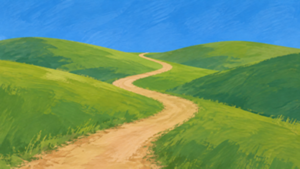
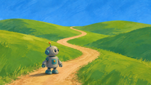
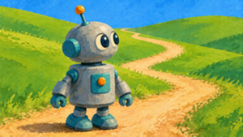
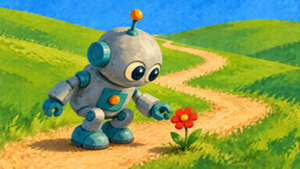
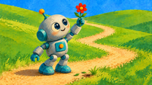
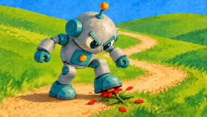

graph TD base["robot-factory-base.png"] --> day["robot-factory-day.png"] day --> day-hadley["robot-factory-day-hadley.png"] day --> night["robot-factory-night.png"] night --> night-hadley["robot-factory-night-hadley.png"] night --> night-sunrise["robot-factory-night-sunrise.png"]
Sometimes you don’t want a set of independent images — you want a series of images that build on one another, like the panels of a story. bananarama supports this with sequence: each step generates a new image by editing the previous step. This greatly improves consistency, but YMMV; current models are still not great at this. (But, at least as of Sept 2026, GPT models seemed to do better than Gemini models.)
YAML syntax
To create a chain of images that build on one another, use a sequence instead of description. The top-level sequence is a chain: each step edits the previous step’s output, and every intermediate is saved as a file:
defaults:
model: gpt-image-2.5-flare
images:
- name: robot-factory
sequence:
- name: base
description: Draw a factory full of robots typing at computers.
- name: hadley
description: Add [hadley] overseeing the scene from a catwalk.
- name: night
description: Make it night time, with the robots' screens glowing.This generates robot-factory-base.png, robot-factory-hadley.png, and robot-factory-night.png, each building on the previous file.
Branching
A step may itself contain images: independent continuations that each build on the step’s image, not on each other. (Just like the top-level images field, siblings are independent.) sequence and images can be nested arbitrarily: a sequence inside images gives a chain within a branch, and images inside a sequence step gives branches off that step.
Here’s a simple example:
images:
- name: robot-factory
sequence:
- name: base
description: Draw a factory full of robots typing at computers.
- name: day
description: Make it a bright sunny day.
images:
- name: hadley
description: Add [hadley] on the catwalk.
- name: night
description: Make it night time.
images:
- name: hadley
description: Add [hadley] on the catwalk, screens glowing.
- name: sunrise
description: The sun starts to rise on the horizon.This will generate the following six files:
Every step is cached independently, so you can iterate on later steps without paying to regenerate earlier ones. Delete a step’s file and re-run, and only that step is regenerated — the rest of the files are reused as-is.
Example: telling a story
This example tells a short story across a sequence of images. Because it uses a sequence we don’t need to anchor with a reference image to make the main character look the same in every panel. (But if we were to regenerate all the images, we’d get a different robot.)
defaults:
model: gpt-image-2.5-flare
style: >
Chunky gouache illustration with opaque matte colors, visible brushwork,
bold simplified shapes, and a mid-century children's book feel
images:
- name: robot-story
sequence:
- name: meadow
description: >
A quiet meadow with rolling green hills and a single winding
dirt path under a blue sky.
- name: robot
description: >
Add a small curious robot, standing on the path near the front of the
frame and looking around at the hills.
- name: zoom
description: >
Zoom in on the robot,
- name: flower
description: >
The robot discovers a single bright red flower growing beside the
path and bends down to look at it.
images:
- name: careful
description: >
The robot carefully picks the flower and holds it up towards
the sky. The robot looks happy.
- name: stomp
description: >
The robot stomps on the flower. The robot looks angry.First we establish the scene:

Then introduce the main character:

Now we zoom in, preserving the existing imagery:

Then the robot finds a flower.

The last step has nested images, generating two alternative endings:

